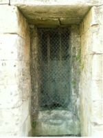

Les puits disparaissent progressivement de notre paysage.

Le dernier à avoir disparu se trouvait rue Saint-Victor, à Hautebraye. Comme beaucoup, il servait jadis à plusieurs familles des maisons avoisinantes. Il continuait à s'offrir au regard des passants qui avaient toujours connu sa margelle et ne peuvent que regretter sa disparition derrière un haut mur.
Souvent creusés à de grandes profondeurs (plusieurs dizaines de mètres au Tiolet, par exemple), les puits étaient indispensables avant l'avènement des adductions d'eau. Lorsque l'habitude fut prise de tirer l'eau du robinet, on a délaissé les puits, puis on en a dallé, comblé, plus souvent sans autre raison que de faire place nette.
Les puits servent trop souvent de dépotoir. Certains regorgent d'ordures au centre d'un village : comment s'étonner qu'on demande leur suppression… Ailleurs, on y a jeté des chiens ou des chats écrasés… Des propriétaires de puits en ont fait, qui un puisard, qui des WC économiques, polluant ainsi les nappes d'eau qui communiquent entre elles. Quelle ignorance et quel mépris pour ce qui se passe sous terre ! Fort heureusement, ceci devient rare. Il y a au contraire maintenant des personnes qui entretiennent, protègent et même fleurissent ces vieux puits, qu'ils soient communaux ou qu'ils leur appartiennent.
Une architecture ingénieuse
Les puits offrent une grande variété d'architecture. Ces bâtiments de protection de l'eau et du système de remontée étaient réalisés avec le goût du travail bien fait : rationnels et fonctionnels, dirait-on aujourd'hui, en tout cas bien réfléchis, souvent ingénieux.
Il y a un rapport direct entre la façon de bâtir les maisons et les puits d'une même localité : mêmes matériaux locaux, à une époque où l'on utilisait ce qu'on avait sur place (ici de la pierre, là du bois, ailleurs de la brique, parfois deux matériaux).
Leur forme est souvent de plan carré, mais dans notre petite région les puits ronds sont les plus fréquents. Suivant la profondeur de l'eau, les manivelles sont doubles. Ce sont les femmes et les enfants qui allaient chercher de l'eau pour les besoins ménagers.
Un patrimoine à préserver
Les paysages sont faits de champs, de collines, de haies, d'arbres et de villages. Les villages sont faits de l'église, du château, des maisons des hommes, des puits, lavoirs, pigeonniers et des mares : tous éléments caractéristiques qui forment un tout.
En ce qui concerne nos modestes puits, creusés à main d'homme à de si grandes profondeurs, nous devrions prendre garde de ne plus les détruire. C'est un véritable gaspillage que de supprimer quelque chose qui n'est ni laid, ni encombrant et qui pourrait encore être utile. L'eau des puits est analysée chaque année pour contrôler la qualité des eaux captées que nous buvons.
Pourquoi aimer les vieux meubles, collectionner les moulins à café et toutes sortes d'objets qui nous parlent des hommes qui nous ont précédés, et ne pas garder ces humbles architectures qui sont une forme d'archéologie vivante et peuvent encore servir si, comme pour les vieux meubles, on se donne la peine de les entretenir ? Alors pourquoi les détruire ?
Sources et fontaines
Quelques sources ou fontaines sont encore présentes dans notre commune :
- La source du rû de Bonval prend naissance dans les marais d'Hautebraye ; le rû parcourt 2 200 m avant de se jeter dans le rû d'Hozier.
- La fontaine Armée se trouve au bord du chemin qui mène à Berry. Son nom ne vient pas des épisodes de la guerre qui s'y sont déroulés, mais plutôt de sa teneur en fer assez élevée : elle s'appelait déjà fontaine Armée avant la guerre. Elle se jette directement dans le rû d'Hozier.
- La Clairette, petite source qui se trouve entre l'église et Massenancourt. Des villageois venaient encore récemment y remplir leurs bouteilles ; elle alimente le rû des Tanneurs.
Il resterait d'autres sources : une à la sortie d'Autrêches vers Morsain, sur la gauche, dans les marais, et d'autres qui alimentent les lavoirs et dont je ne connais pas l'origine.